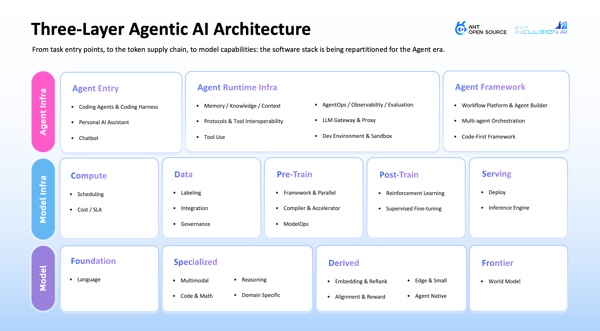
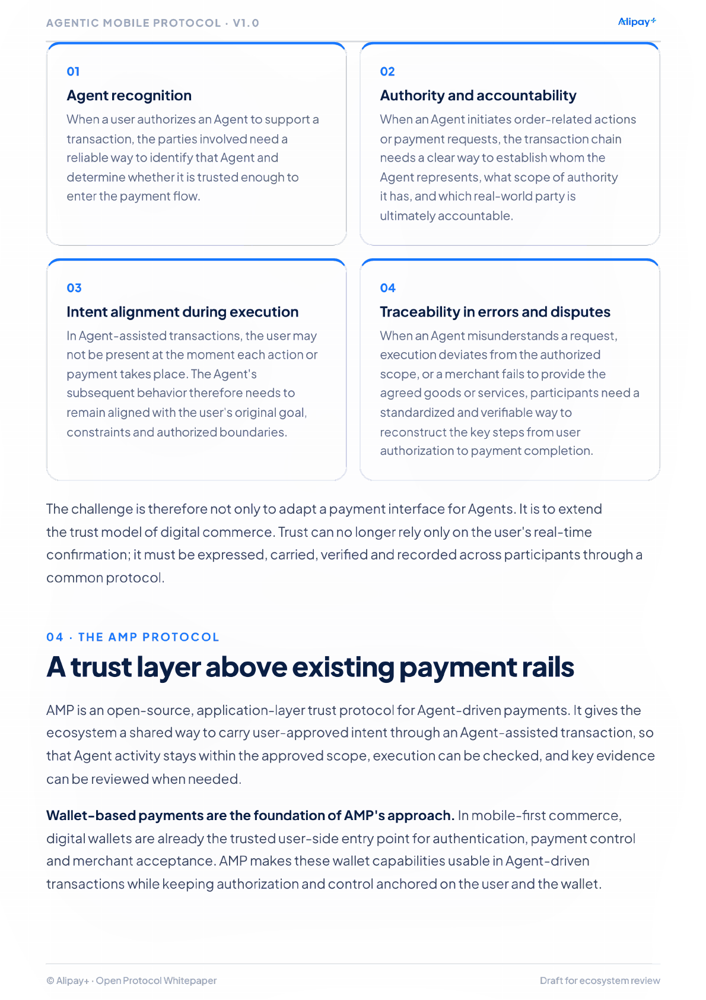

The ecosystem moves faster than our categories
I started the landscape because stars and social media made it difficult to tell which projects were attracting attention and which ones were becoming real engineering communities.
Project repository: antgroup/agentic-ai-landscape
We began with the LLM development toolchain and updated the map as the ecosystem changed.
Each project is classified with public data and manual review.
Stars show interest; issues, PRs, and reviews show work.
The landscape gives me a repeatable way to read a noisy ecosystem and explain why a project or category matters.
How we build the landscape
We combine community data with human review, so the map captures attention and engineering substance.
Useful for spotting interest, but easy to over-read in fast AI cycles.
Looks at the collaboration relationships around issues and pull requests.
Manual taxonomy, relevance checks, and a final selection of representative projects.
Three-layer architecture
The layers push each other: agents create longer workloads, infrastructure makes them scalable, and models expand what agents can do.
Agent Infra
Gives agents a working environment, with tools, context, and clear boundaries.
Model Infra
Makes model capability reliable enough to operate, especially when routing and cost start to matter.
Large Models
Define capability boundaries. Real deployments already mix models for different jobs.

The April OpenRank Top 4 captured the mix clearly: OpenClaw, vLLM, PyTorch, and Claude Code.
The Agent Infra landscape
This is the busiest layer. Software is being repackaged as something agents can safely enter and operate.

Coding agents are an early large-scale entry point because code already has tests and a reviewable history.
The largest category in the Agent Infra layer.
A growing tool and data connection layer around agents.
The Model Infra landscape
In the agent era, tokens become production material. Stability, routing, cost, and observability become infrastructure problems.

Model price is one part of the cost. Routing and workload design also matter once agents make many calls for one task.
Spend tracking discussions in LiteLLM
GitHub issues and pull requests show that cost control is already an everyday engineering topic.
Selected benchmarks kept quality close to a strong model while cutting cost.
Reported in a cloud routing setting while matching the strongest model's quality.
A production issue described node restarts cascading into retries and 503 errors across a 120-worker inference deployment. Stability becomes harder as the system grows.
The large-model landscape
Models still matter, but the ecosystem is moving toward many models, many providers, and many routing choices.

The useful question is which model fits the task, the budget, and the risk level.
What we found
The landscape shows an ecosystem reorganizing around agent execution. Model access is only one part of that system.
Projects changed their description
Many now describe themselves with agent-runtime language.
Top projects use coding agents
Repository files show that coding agents are already part of project maintenance.
Software activity keeps expanding around AI
The growth is visible on developer platforms, model hubs, and automated accounts participating in open-source work.
GitHub reported more than 180 million developers in Octoverse 2025.
Hugging Face passed two million public models, with more than 540,000 added by May 2026.
OpenDigger observed this many in the first four months of 2026, compared with 112 in the same period of 2017.
In the 226 projects we studied, 563,973 developers or automated accounts participated during the first four months of 2026.
Known employers in the Top 10K
Known contributor locations
Among the Top 10,000 contributors, 198 were likely bot or app accounts.
Agents need visible authority and evidence
Once an agent can trigger a workflow or prepare a transaction, the system needs to know who approved the action and whether it stayed inside the approved scope.
Authority
Identify the person or institution behind an agent action and preserve the approval.
Scope
Record the budget, policy, or transaction boundary the agent must follow.
Evidence
Keep enough context to reconstruct the action when it is reviewed later.
A catalogue of AI risks and mitigations for financial institutions.
Agentic use cases could add concrete examples around delegated actions, model overreach, and decision audit.
Standards-based process orchestration with human tasks and audit-ready execution.
An agent workflow could be tested with explicit approval points and recovery paths.
Machine-readable architecture that can be validated and kept under version control.
A controlled-agent or AMP reference architecture could make boundaries and control points inspectable.
A machine-readable and executable model for financial products, trades, and lifecycle events.
Its modelling approach is relevant to user intent and transaction evidence in agent-assisted payments.
Shared work around high-performance computing in finance.
Agent workloads raise familiar questions about inference capacity, routing, and cost.
Payments expose the agent trust gap
A user may approve an intent now and let an agent continue later. The merchant and wallet still need to verify what the user allowed.

The payment flow needs a durable connection between the user's approval and the transaction eventually submitted by the agent.
AMP carries trust context above existing payment rails
AMP is an open-source application-layer protocol developed by Alipay+ for agent-assisted payment scenarios.


The first useful work is an integration case
A small reference flow would make the protocol questions easier to evaluate than a broad discussion about agentic commerce.
Payment participants
Banks can test delegated intent against risk policy. Wallets can examine user approval and control. Card networks and acquirers can assess authorization and merchant integration.
FINOS projects
Fluxnova can represent the workflow. CALM can describe its architecture. The AI Governance Framework can map the risks. CDM offers useful modelling patterns for transaction evidence.
A separate AMP session could walk through one real-time flow, one pre-authorized flow, and the open integration questions.
An open stack for inclusive AGI
InclusionAI works on models, the infrastructure around them, and services that bring those capabilities into real settings.

AReaL
Our reinforcement learning infrastructure for reasoning and agentic models is part of the PyTorch Foundation ecosystem.
ASystem
A future foundation donation is under consideration for the agent runtime stack.
The landscape is part of this work: it helps us see where open infrastructure is forming and where foundation governance may help.